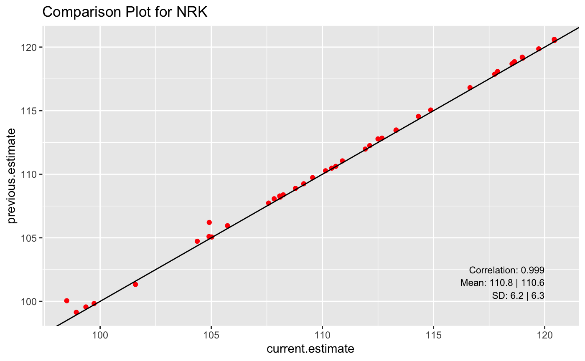

library(qgert)
In a comparison plot, the result of two subsequent analysis are compared by a scatter plot. In that plot the results of the current analysis are on the x-axis and the results of the previous analysis are on the y-axis. The resulting scatter plot should result in a cloud of points that is close to the y = x line in the first plotting quadrant. Any outlier point can give hints about potential problems in the analysis.
For a single routine analysis the comparison plots by itself might only be meaningful with a lot of expert knowledge. When showing the comparison plots of two subsequent analyses next to each other, it might be much easier to get an idea about the quality of the current routine analysis.
The creation of a single comparison plot is already implemented. The implementation uses a shell script (stdfmtprogs/prog/compare.sh) to prepare the data that are then shown in the comparison scatter plot. This script is called with specific input parameter for each evaluation via a specific wrapper script.
Although, the functionality is already available for creating the single plots, it might still be interesting to give a short outline about how a comparison plot is constructed. In principle, a comparison plot just needs two pieces of input. These consist of the two result files from the two subsequent analyses for which we want to compare the evaluation results. The basic ideas are shown with two small example datasets.
s_current_result_path <- system.file("extdata", "current_results.txt", package = 'qgert') s_previous_result_path <- system.file("extdata", "previous_results.txt", package = 'qgert')
In a first step the two datasets must be read
library(dplyr) tbl_current_result <- readr::read_delim(file = s_current_result_path, delim = ' ') tbl_current_result <- tbl_current_result %>% dplyr::rename(current.estimate = estimate) # tbl_current_result
The previous results
tbl_previous_result <- readr::read_delim(file = s_previous_result_path, delim = ' ') tbl_previous_result <- tbl_previous_result %>% dplyr::rename(previous.estimate = estimate) # tbl_previous_result
The quantity that is plotted can be found in the column entitled estimate. For each of the traits different plots should be produced.
The data from the two tibbles are joined to be used for the plotting afterwards
tbl_plot_result <- tbl_current_result %>% inner_join(tbl_previous_result, by = c("idaItb16" = "idaItb16", "trait" = "trait")) # tbl_plot_result
For a single trait, we get
tbl_plot_nrk <- tbl_plot_result %>% filter(trait == 'nrk') # tbl_plot_nrk
This can now be used to do a scatter plot
n_cor_current_prev <- cor(tbl_plot_nrk$previous.estimate, tbl_plot_nrk$current.estimate) n_mean_previous <- mean(tbl_plot_nrk$previous.estimate) n_sd_previous <- sd(tbl_plot_nrk$previous.estimate) n_mean_current <- mean(tbl_plot_nrk$current.estimate) n_sd_current <- sd(tbl_plot_nrk$current.estimate) xrng <- range(tbl_plot_nrk$current.estimate) x_pos_txt <- floor(xrng[2]) yrng <- range(tbl_plot_nrk$previous.estimate) y_pos_txt <- ceiling(yrng[1]) + 0.5 library(ggplot2) tbl_plot_nrk %>% ggplot(aes(x=current.estimate, y=previous.estimate)) + geom_point(color = 'red') + geom_abline(slope = 1, intercept = 0) + ggtitle(label = "Comparison Plot for NRK") + geom_text(aes(x, y, label = paste0('Correlation: ', round(n_cor_current_prev, digits = 3))), data = data.frame(x = x_pos_txt, y = y_pos_txt + 2), hjust = 1, size = 3) + geom_text(aes(x, y, label = paste0('Mean: ', round(n_mean_previous, digits = 1), ' | ', round(n_mean_current, digits = 1))), data = data.frame(x = x_pos_txt, y = y_pos_txt + 1), hjust = 1, size = 3) + geom_text(aes(x, y, label = paste0('SD: ', round(n_sd_previous, digits = 1), ' | ', round(n_sd_current, digits = 1))), data = data.frame(x = x_pos_txt, y = y_pos_txt), hjust = 1, size = 3)

These comparison plots are done for all traits that are in a result file. In general, a comparison plot requires as input the following components
The points that are away from the y=x line are interesting in the sense that they can point to a potential problem in the evaluation. Hence it would be very interesting to have a drill-down functionality to select the points on the plot and to get more information about the data that is behind the given point.
One possible implementation of such a drill-down functionality is via the linked-brushing feature in a shiny app.